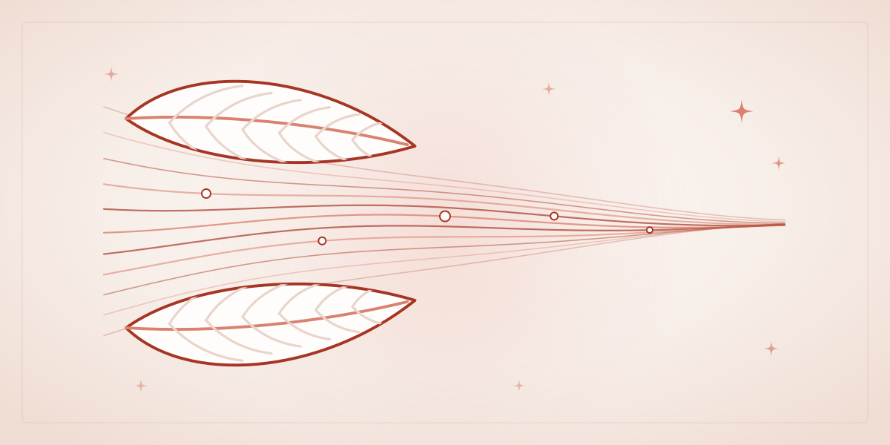
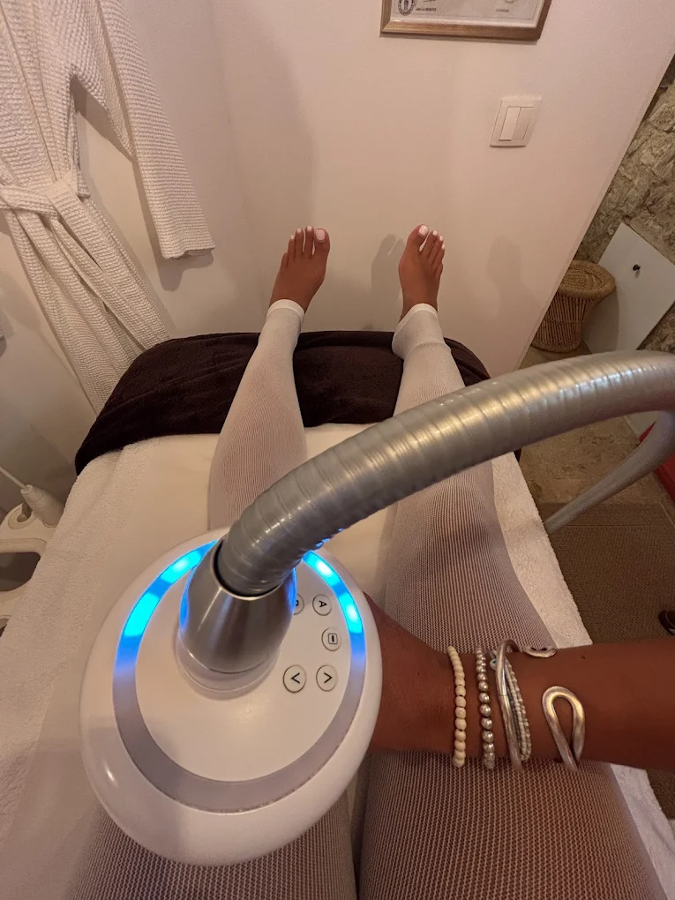
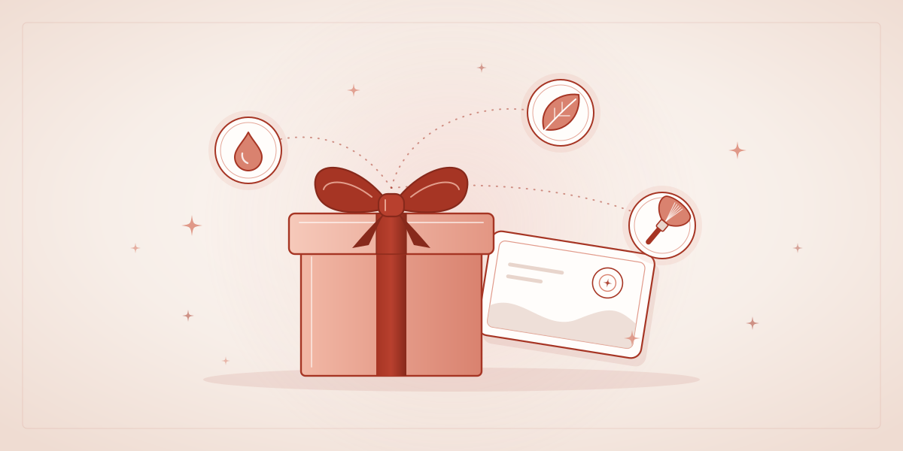

Et si l'on associait deux gestes complémentaires, un drainage doux et un soin mécanique ? C'est l'idée de la Cure Expertise Silhouette, que nous proposons avec Sophie d'Emana, dans nos locaux. Voici comment elle fonctionne, et ce que l'on peut raisonnablement en attendre.
La Cure Expertise Silhouette en bref
La Cure Expertise Silhouette compte 6 séances, chacune associant 45 minutes de drainage lymphatique et 30 minutes de LPG, soit 1h15 de soin. La première séance est à 120 euros, et la cure est réalisée avec Emana by Sophie, installée dans nos locaux.
Elle est disponible pour le bas du corps ou pour le ventre et la taille, avec un bilan de 20 minutes avant la cure. Ce n'est pas un traitement amaigrissant, et aucun résultat n'est garanti : la cure vise l'aspect de la peau et la silhouette.
Pourquoi une cure plutôt qu'une séance isolée ? Parce que l'aspect de la peau se travaille dans la durée : en répétant les séances, on donne au drainage et au LPG le temps de s'additionner. C'est la logique de toute cure, et c'est pour cela que les cures se règlent en plusieurs fois sans frais.

Réserver ma cure Silhouette (nouvel onglet)
Le drainage lymphatique : un geste doux, pas un soin médical
Le drainage lymphatique esthétique est un massage lent et très doux, fait de gestes légers et répétés. Il est proposé pour le bien-être, pour accompagner le drainage et pour la silhouette. Il ne s'agit pas d'un soin médical, et il ne remplace pas l'avis d'un professionnel de santé si vous avez un doute sur votre circulation.
Chez Emana by Sophie, le drainage fait partie d'un domaine plus large, « drainage et madérothérapie », décrit par Sophie comme remodelant, drainant et sculptant. Sa signature : « L'expertise par le toucher ».
C'est aussi un vrai moment de détente, ce qui compte quand on veut prendre soin de soi dans la durée.
Le LPG, l'autre moitié de la cure
Le LPG est réalisé par LUMIA, avec la technologie Cellu M6 Alliance, non invasive. Son palper-rouler stimule la peau en profondeur et agit sur la cellulite, la fermeté et le drainage. C'est un soin confortable, dont l'intensité est réglée selon votre sensibilité.
Les deux gestes se répondent : le drainage prépare avec douceur, le LPG travaille l'aspect de la peau. Si vous voulez comprendre ce que l'on peut espérer côté cellulite, lisez aussi notre article Cellulite : ce qui marche, ce qui ne marche pas.
Chez LUMIA, le LPG corps existe aussi en séances seules : anti-cellulite, jeune maman et relaxation à 60 euros pour 30 minutes, détox à 70 euros pour 40 minutes. Dans la cure, les 30 minutes de LPG s'inscrivent dans une séance plus longue, associée au drainage.
Les protocoles et le déroulement des séances sont détaillés sur notre page LPG endermologie à Manosque.
Qui fait quoi : LUMIA et Emana by Sophie
Soyons clairs sur ce point. Emana by Sophie est une activité indépendante, distincte de l'institut LUMIA. Sophie exerce le massage bien-être dans nos locaux, au 10 Bis avenue Jean Giono à Manosque, sous sa propre responsabilité. L'institut LUMIA n'est pas responsable des prestations réalisées par Emana by Sophie, et réciproquement.
Dans la cure, le drainage lymphatique est réalisé par Sophie, et le LPG par LUMIA. Deux savoir-faire, deux entités, un même lieu et un protocole pensé pour s'enchaîner. Concrètement, vous venez au même endroit pour toute la cure, et vous retrouvez deux praticiennes selon l'étape du soin. Elles ne se substituent pas l'une à l'autre : chacune reste responsable de sa propre prestation, et vous savez toujours à qui vous vous adressez, pour une question sur le drainage ou sur le LPG.
Comment se déroule la cure ?
Tout commence par le bilan de 20 minutes, qui permet de poser votre objectif et de vérifier que la cure vous convient. Viennent ensuite les 6 séances, de 1h15 chacune. Le rythme est défini ensemble, selon votre emploi du temps et votre peau.
Comme pour tout soin du corps, l'hygiène de vie complète le travail : activité physique régulière, bonne hydratation et alimentation équilibrée. Si vous avez un doute sur votre situation, parlez-en lors du bilan, nous vous orienterons.
Les cures se règlent en plusieurs fois sans frais. Le détail du tarif figure sur notre page tarifs, et la réservation se fait en ligne ou par téléphone.
Questions fréquentes
Que contient la Cure Expertise Silhouette ?
6 séances, chacune de 45 minutes de drainage lymphatique et 30 minutes de LPG, soit 1h15, pour le bas du corps ou pour le ventre et la taille, avec un bilan de 20 minutes avant la cure.
Le drainage lymphatique est-il un soin médical ?
Non. Le drainage lymphatique proposé ici est esthétique, orienté bien-être et silhouette. Il ne remplace pas un avis médical.
Qui réalise le drainage et qui réalise le LPG ?
Le drainage lymphatique est réalisé par Sophie, d'Emana by Sophie, activité indépendante installée dans nos locaux. Le LPG est réalisé par l'institut LUMIA.
À lire aussi

Coffrets et cartes cadeaux : quel soin offrir ?
Carte cadeau ou coffret à Manosque : choisir le soin à offrir selon la personne, avec prix et durées, et s'en procurer un à l'institut LUMIA.

Microneedling, exosomes et PDRN : le soin à 0,25 mm
Microneedling à Manosque : stylo médical à 0,25 mm, sans injection, actifs aux exosomes et au PDRN, cure de 6 séances. On vous explique le soin pas à pas.

Quel soin du visage choisir selon sa peau ?
Teint terne, taches, rides ou relâchement : quel soin du visage choisir ? LUMINEA, LED, microneedling, COSMELAN ou LPG, notre guide d'orientation à Manosque.